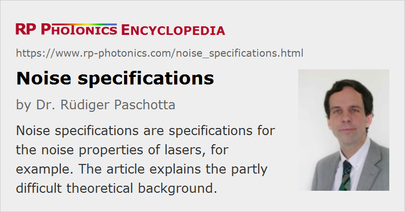

Noise Specifications
Definition: specifications for the noise properties of lasers, for example
German: Rauschspezifikationen
Category: fluctuations and noise
How to cite the article; suggest additional literature
Author: Dr. Rüdiger Paschotta
The strength of noise e.g. of the output of a laser often needs to be quantified – particularly in the context of applications such as frequency metrology, sensitive spectroscopic measurements, or optical fiber communications, where the performance of devices or systems is limited by noise.
Examples of Noise Specifications of Lasers and Optical Amplifiers
Intensity noise is often measured by analyzing the laser output with a photodiode and related electronic equipment such as an electronic spectrum analyzer. It can be specified with a power spectral density of the relative intensity noise as a function of noise frequency. For some purposes, a root-mean-square (r.m.s.) value, essentially the square root of the integral of the power spectral density over some frequency range (e.g. 1 Hz – 1 MHz), is sufficient. However, r.m.s. values without specification of the measurement bandwidth are nonsensical. That bandwidth is determined as follows:
- The higher frequency limit is often set by the speed of the photodetector (including detection electronics). Obviously, a slow detector is not able to record fast fluctuations, and therefore indicates weaker noise than a fast detector. For digital recordings, the measurement bandwidth is at most half the sampling frequency (→ Nyquist theorem), and in practice often even lower, as low-pass filtering has to be applied before the sampling in order to avoid aliasing effects.
- The lower frequency limit is approximately the inverse measurement time. When the intensity fluctuations are recorded in some limited time interval, one cannot know how much the average of the recorded power deviates from the average power over longer times. Therefore, the influence of noise at frequencies below the inverse measurement time is suppressed.
Optical phase noise can be quantified by the power spectral density (PSD) of the phase fluctuations. Alternatively, the PSD of the fluctuations of the instantaneous frequency can be specified. Such power spectral densities often diverge for zero frequency, so that integration down to zero frequency is not possible. For simple random-walk processes, the specification of a coherence time or coherence length or of a linewidth value can be appropriate. Note that linewidth values often depend on the measurement time.
Frequency noise is directly related to phase noise; it is the noise of the instantaneous frequency, the latter being related to the temporal derivative of the phase.
Timing jitter of a pulse train can be quantified as the power spectral density of the timing deviation (e.g. from some noiseless reference) or the timing phase. It is also common to specify an r.m.s. value for a certain range of noise frequencies.
In frequency metrology, the use of a Allan deviation or Allan variance as a function of time is common. These quantities can be calculated from a power spectral density, whereas the opposite calculation is ambiguous.
The noise figure of an electronic or optical amplifier quantifies the amplifier excess noise.
In frequency metrology, it is common to use normalized phase fluctuations x(t) = δφ(t) / (2π ν0), i.e., phase fluctuations divided by the mean angular frequency. The time derivative of the normalized phase fluctuations then delivers the normalized frequency fluctuations y(t), i.e., the fluctuations of the instantaneous frequency relative to the mean frequency. For a comparison of the phase noise of sources with different mean frequencies, it is appropriate to compare the power spectral densities Sx(f) of normalized phase fluctuations or Sy(f) of normalized frequency fluctuations, rather than of the phase or frequency excursions themselves, because these normalized fluctuations are what determines the precision and accuracy e.g. of a clock.
Ambient Conditions
Laser noise often depends on ambient conditions. Therefore, it is obviously essential to know what are the ambient conditions for which certain specifications apply. In particular:
- Does it apply to constant room temperature, or for arbitrary temperature changes within the allowed range of operation temperatures?
- Is it valid immediately after switching on the device, or only after a long warm-up time?
- Is a vibration-free environment assumed?
The latter is particularly important for specifications of beam pointing fluctuations.
It is not easy to specify laser noise under the influence of ambient noise sources such as vibrations, since it is difficult to quantify these influences. Also, their impact may strongly depend e.g. on the noise frequency: a mechanical setup may have some resonances, making the device very sensitive to vibrations at certain frequencies.
Common Problems
For various reasons, correct noise specifications are often not achieved:
- The mathematical description of noise is sophisticated, and often not properly treated in physics or engineering courses. As a result, nonsensical noise specifications are widespread in product data sheets and even in the scientific literature.
- In laser physics, there is a variety of different types of noise, which are conceptually and physically related in non-obvious ways (example: optical phase noise and timing phase noise of mode-locked lasers). Therefore, physical insight is as essential as mathematical knowledge.
- Noise measurements are subject to many non-trivial technical issues. For example, detailed know-how on the inner workings of electronic spectrum analyzers is required for obtaining correct results from measurements with such devices. A black-box treatment (using the device readings without knowing how they are generated) easily leads to wrong results, e.g. via inappropriate device settings or the failure to apply certain correction factors (e.g. for logarithmic averaging in the spectrum analyzer).
Questions and Comments from Users
Here you can submit questions and comments. As far as they get accepted by the author, they will appear above this paragraph together with the author’s answer. The author will decide on acceptance based on certain criteria. Essentially, the issue must be of sufficiently broad interest.
Please do not enter personal data here; we would otherwise delete it soon. (See also our privacy declaration.) If you wish to receive personal feedback or consultancy from the author, please contact him e.g. via e-mail.
By submitting the information, you give your consent to the potential publication of your inputs on our website according to our rules. (If you later retract your consent, we will delete those inputs.) As your inputs are first reviewed by the author, they may be published with some delay.
See also: laser noise, intensity noise, relative intensity noise, phase noise, frequency noise, power spectral density, linewidth, coherence, coherence time, narrow-linewidth lasers, laser specifications, The Photonics Spotlight 2006-10-09
and other articles in the category fluctuations and noise
|  |
If you like this page, please share the link with your friends and colleagues, e.g. via social media:
These sharing buttons are implemented in a privacy-friendly way!